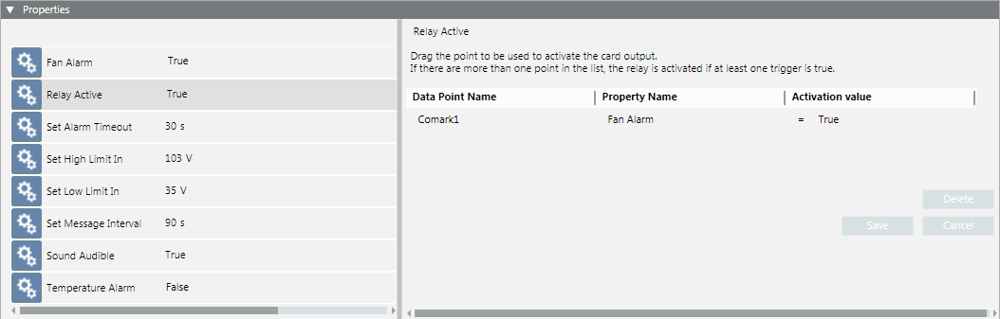
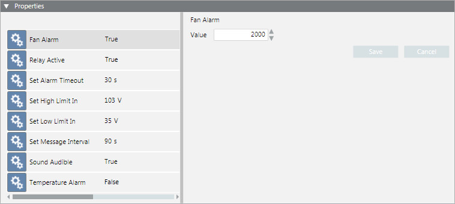
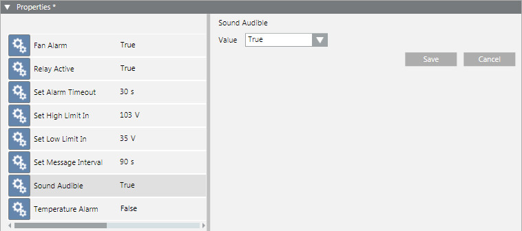

Comark Monitor Card Properties
Desigo CC manages a number of properties related to the supervision functions of the Comark monitor card. The Properties expander includes the following configurable properties:
The Operation tab displays a subset of properties, while the Extended Operation tab displays all the properties (both configurable and non-configurable).
Properties Expander - Configurable Properties | |
Property | Description |
Fan Alarm | Fan low speed alarm threshold in rpm. Threshold range is 10 through 9990. Default is 1000. |
Relay Active | Relay output state: True if active, False if inactive. For each point in System Browser, you can configure the property to monitor and the value that activates the relay. If there is more than one point, the relay is activated if at least one trigger is true. |
Set Alarm Timeout | Time (in seconds) that must elapse without a watchdog refresh command from PC software before the monitor card will enable the audible alarm. It serves as an early warning of an impending PC reset. Default is 30 seconds. |
Set High Limit In | High digital input comparator threshold to a level in Volts/10. Threshold range is 0 through 25.0. Default is 103 (10.3 V). |
Set Low Limit In | Low digital input comparator threshold to a level in Volts/10. Threshold range is 0 through 25.0. Default is 43 (4.3 V). |
Set Message Interval | Supervision message interval value (in seconds). When this value expires the monitor card will send a supervision message to the PC. Default is 90 seconds. NOTE: An interval value of 0 seconds will disable this function. |
Sound Audible | Audible alarm state: True if active, False if inactive. NOTE: Jumper JP1 on the card can disable the audible alarm. |
Temperature Alarm | Temperature alarm threshold in °C. Threshold range is 0 through 90°C. Accuracy is +2.5/-2.0°C over the full range. Default is 55°C. |
Extended Operation Tab - Non-configurable Properties | |
Property | Description |
Summary Status | Status of the Comark Card. |
Card Online | Whether or not (Card Online/Card Offline) communication exists between the monitor and PC. |
Reset Enabled | PC reset enable status (True = enabled, False = disabled). |
Card Version | Version of the monitor firmware. |
Component Name | Name of the software component. |
DriverID | ID of the Driver. |
In 1 High | State of the monitored digital inputs (INT1-4):
|
In 1 Low | |
In 2 High | |
In 2 Low | |
In 3 High | |
In 3 Low | |
In 4 High | |
In 4 Low | |
Watchdog Enabled | Whether or not PC watchdog is enabled. |


